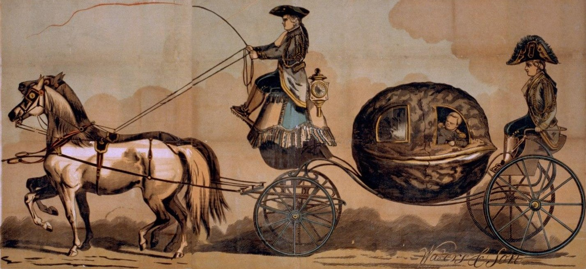

The Evolution of Language
Paper Review
Language evolution, Information theory, Error correction

I came accross this paper after reading (Skyrms 2010) and (Lewis 1969) and I was looking at models that give some ideas on how languages might evolve but in particular how parctical constraints might shape the evolution of languages. This paper is one such stepping stone towards a more principled approach to engineering language for RL agents.
This is an early paper on emergence of languages. It quite a bit of a challenge to read. The authors are experts on evolutionary game theory and this is another aspect which is less familiar to me. However there is lots of clever thinking here and the more I ponder this paper the more I get to develop my own ideas and intuitions.

This paper examines at emergence of languages evolution through the lens of resilience to errors. The game introduced by the authors is very similar to the Lewis signaling game, but on close inspection it may lead to much richer outcomes and if my intuition is correct, this formulation may have advantages for Deep learning and RL. While the results on the role of error is central to the paper, e.g. showing how limited sets of phonemes (30) are better then the full inventory (300+). My main take away is that we should add an error parameters to signaling games. They errors can lead to more than just robust equilibria, they seem to have self organizing effects. I also think that the learning of self organizing mappings is the key to development of more generalization and compositionality in signaling systems. So the big take aways are dont be afraid of errors in communication, they are a natural part of the process of language evolution. And that (Nowak and Krakauer 1999) has a formulation that is potentially more general then the Lewis signaling game and friendly to RL, Gradient Descent, Probabilistic methods as well as Information theory. Also at a glance the three matrix product in the formulas below looks like it can be used in a transformer network which can evaluate them in parallel with or without positional encodings.
Going over the paper kept generating many more insights then the material in the actual paper. I’ll try and keep my own ideas in callouts.
- The paper is not an easy read.
- Many details are omitted, but later intimated in the endless captions of the figures. If you read it over a number of times it becomes possible to piece together more of the details. And some follow up papers also fill in additional details.
- The mathematical approach seems cryptic. It is not aligned to RL or or Lewis Games in Game theory. It is based on papers and text on Evolutionary game theory which I am less familiar with.
Abstract
The emergence of language was a defining moment in the evolution of modern humans. It was an innovation that changed radically the character of human society. Here, we provide an approach to language evolution based on evolutionary game theory. We explore the ways in which proto-languages can evolve in a nonlinguistic society and how specific signals can become associated with specific objects. We assume that early in the evolution of language,errors in signaling and perception would be common. We model the probability of misunderstanding a signal and show that this limits the number of objects that can be described bya protolanguage. This “error limit” is not overcome by employing more sounds but by combining a small set of more easily distinguishable sounds into words. The process of “word formation” enables a language to encode an essentially unlimited number of objects. Next, we analyze how words can be combined into sentences and specify the conditions for the evolution of very simple grammatical rules. We argue that grammar originated as a simplified rule system that evolved by natural selection to reduce mistakes in communication.Our theory provides a systematic approach for thinking about the origin and evolution of human language.
The Review
The Evolution of Signal–Object Associations.
This authors describes a setup that is very similar to Lewis signaling game. Each agent is both a sender and a receiver. They payoffs are also made symmetric as they get the averaged expected payoffs for each individual. I.e. each might have a different expected payoffs (one might be a poor sender but a good reciever) The other might be great at both. But since the payoffs are averaged, the game becomes symmetric and therefore cooperative!
Each agents A_i is initially assigned a randomized language \mathcal{L}_i=<P,Q> . There are two agents per interaction but many agents in the population. Payoffs are symmetric but with can communicate better get a higher payoffs. So this game also combines cooperation and competition.
I think that instead of working with binary permutations matrices the agents use probability matrices. These are continuous and may be easier to optimize using gradient descent.
For RL - we can have a richer reward signal. (Though we could also get it for the lewis signaling) It is the mean of each agent’s expected communication success with the other agents.
In terms of modeling it demonstrates that we can combine
- a cooperative communication paradigm with (symmetric payoff)
- a competitive evolutionary paradigm (zero sum game)
The formulation is probabilistic.
- The output matrix can be interpreted as a probabilistic mapping and analyzed by by expanding the terms as nested sums of the products of the input matrices.
- The notion of using a phonemic uncertainty matrix is very interesting. It is a simple way to model the uncertainty in the mapping between signals and states. And is mapped back to the similarity of the phonemes.
- It could be extended to add salience, signaling risk levels, if they are formulated in terms of probabilities. By multiplying additional matrices.
- We could also use a diagonal block matrix to model normal subgroup to model subspace of the state space. Which would maker the
- We might be able to add Welch-Hadamard blocks in the diagonal to create entangled error correcting subspace. This would allow us to model bound states in the state space. These are embedding subspace.
- Finally I think that we might also use Self-Organizing maps to learn the subspace structure of the state space and use it to find a matching compositional communication structures.
- The output matrix can be interpreted as a probabilistic mapping and analyzed by by expanding the terms as nested sums of the products of the input matrices.
What remains to be seen is if it leads to more desireable set of equilibria that are easier to learn, more robust to perturbation and other desiderata that enhance a signaling system into a language.
The agents are not learning through communications but rather being selected in proportion to their fitness (Expected communication ability). Which means the agent with the best ability to communicate with most other agents will dominate the population, rather than the agent with the best signaling system.
If we dig a bit deeper. If there are two types of agents - SS_i agents which a maximally incompatible signaling system1 - CP_i which uses a completely pooling system (one that ignores the input and randomizes the output)
then we have:
0=F(SS_i,SS_j) < F(CP,SS_i) = 1/n \qquad \forall i.
i.e. guessing is better then perfect miss-coordination.
Of course this kind of assignment is unlikely to come up in a random assignment. But it indicates that perfect signaling systems are less likely to evolve if they must compete with many more imperfect ones with mutual that can partially coordinate with more agents.
I.e. agents with poor multilingual capabilities will have a comparative advantage over agents with monolingual abilities if the monolingual ones are sufficiently sparse.
if we swap out the CP agent with a PP agent (partial pooling) the
I guess this issue could be mitigated by having very many more agents then equilibria. But as signaling systems are grow as N! and they are the sparse in the possible equilibria, this is not feasible for large signaling systems.
To explore these notions we need an efficient learning algorithm that can learn the equilibria that are also robust to errors. My Bayesian Adaptive RL algorithm can handle errors, so it might be a good start. However I have yet to consider it complexity in the number of agents and signals.
A new algorithm in the works that is also aware of actions of normal subgroups to structure state into subspaces is likely to be more efficient to learn and to scale better.
The paper makes no mention of the Lewis signaling game and only cites sources on evolutionary game theory, population dynamics and biological signaling. But the basic evolutionary language game is very similar to the Lewis signaling game. I have not analysed it but from the text in figure 1, I think it has the same types of equilibria.
I also simulated some algorithms in which agents had (P,Q) and (P’,Q’) belief or urn matracies when learning the Lewis signaling game. But my algorithms were RL and Bayesian RL.
What seems differrnt from the lewis is that the agents have different Languages L=(P,Q) and L’=(P’,Q’) and they evolve through population dynamics. But the agent’s intial linguistic endowment is not necessarily optimal. I.e. we are not told P*Q = 1 rather that \sum_i p_{ij} =1 they have random values. In such a setup it unclear if evolution will lead to a separating equilibrium or just reinforce the initial bias.
In the basic evolutionary language game with
- m sounds (signals)
- n objects
- The active matrix P with entries p_{ij}, denoting the probability that for a speaker that an object i is associated with sound j.
- A passive matrix Q contains the entries q_{ji}, that denote the probability that for a listener that a sound j is associated with object i.
It is not clear how an agent uses the active matrix to produce a signal given a some object j.
- Do they pick a signal i with probability p_{ij} - this is a Bayesian interpretation of the active matrix witch each agent having a subjective Language \mathcal{L}.
- Do they use a MAP estimate, i.e. pick the most likely signal, - this approach is closest to the Lewis signaling game. This is a deterministic interpretation of the active matrix.
- Do they they send all signals at once weighted by the p_{ij}?
I prefer 1 as it is how I tend to simulate it.
Suppose A sees object i and signals, then B will infer object i with probability \sum_{j=1}^m p_{ij} q_{ji}
The overall payoff is symmetric for communication between A and B is taken as the average of A’s ability to convey information to B, and B’s ability to convey information to A.
\begin{align*} \mathbb{E}[\text{Payoffs}\mid L,L'] &= \frac{1}{2} \overbrace{\sum_{i=1}^n \sum_{j=1}^m p_{ij} q'_{ij}}^{\text{A's ability to send interpretable messages}} + \frac{1}{2} \overbrace{\sum_{i=1}^n \sum_{j=1}^m p'_{ji} q_{ji}}^{\text{B's ability to interpret messages}} \\&= \frac{1}{2} \sum_{i=1}^n \sum_{j=1}^m ( p_{ij} q'_{ij} +p'_{ji} q_{ji} ) = \end{align*}
The original formula is rather cryptic. So this version breaks it into parts and annotates it.
- where:
- L = <P,Q> is the language of speaker and
- L'= <P',Q'> is the language of the listener.
This seems like an expectation of the joint probability of the speaker and listener.
so far this seems to be very much aligned with the Lewis signaling game.
Figure 1 shows how a signaling system emerges through population dynamics.
Notes:
- the agents don’t actually learn during the evolution, rather generate offsprings in proportion to their fitness. So with a bit of luck one agent will eventually dominate the population and all the other types will die out.
- Agents with lower fitness are replaced by agents with higher fitness. This means that we are just reinforcing the initial bias towards the most central agent in the cluster as it will have the highest fitness.
- Due to the layouts of the figures, I always think that the agents were on a grid talking with their neighbors, but I believe they are on a simplex and all talk to each other.
The agents evolve a language that
The paper again lacks some important details. Are the agents the details
Word Formation
If we increase our basic signals (think phonemes) we can handle more states. However phonemes exist in a restricted space and as more are added it becomes harder to distinguish between them. This is exacerbated by the fact that we add an explicit chance of communications error based on the phonemic similarity.
\begin{align*} \mathbb{E}[\text{Payoffs}\mid L,L'] &= \frac{1}{2} \sum_{i=1}^n \sum_{j=1}^m \left [ p_{ij} \left( \sum_{j=1}^m u'_{jk}q'_{ki} \right) + p'_{ij} \left( \sum_{j=1}^m u_{jk}q_{ki} \right) \right] = \end{align*}
where:
- U are matrices with u_{ij}=s_{ij}\sum_{k=1}^m s_{ik} and
- s_ij is the similarity between sounds (signals) i and j.
The Evolution of Basic Grammatical Rules.
The paper
Some ideas
I spent a large amount of time to see how the game is related to the Lewis signaling game.
What I slowly came to realize is that the formulation in this paper is potentially more general then the Lewis signaling game.
What I understood is that in the Lewis signaling agents are trying to learning invertible mapping from an to signal space.
In this as far as I can tell, the agents are ‘modeling’ such mappings using mixtures (of states or signals). If the Lewis signaling uses binary matrices to model connections between signals and states, this formulation is uses continuous random variables to model the connections. We can go to a binary matrix by using the MAP estimate of the mixture.
I found this formulation is rather annoying at first glance but I stated to see its potential in the second variant. In this extension agents also apply a mapping that corresponds to phonemic uncertainty. This can also be viewed as a noisy filter. Anyhow they end up with a game with more complex mappings in which similar signals are more likely to lead to the wrong state.
It is a very simple way to model the uncertainty in the mapping between signals and states. One of the advantages of this approach is that it can be expanded to add saliency, risk levels that can allow us to understand how such constraints shape natural language.
Based on the similarity of the phonemes, the agents can make errors in communication. This is a very interesting idea that I have not seen before. It is a very simple way to model the uncertainty in the mapping between signals and states.
In this the agents compose a mapping corresponding to phonemic uncertainty. Based on the similarity of the phonemes, the agents can make errors in communication. This is a very interesting idea that I have not seen before. It is a very simple way to model the uncertainty in the mapping between signals and states. . This is a very interesting idea that I have not seen before. It is a very simple way to model the uncertainty in the mapping between signals and states.
References
Footnotes
this is a new idea. IF we look at the n! permutations matrices we will generally find a shared signal state mapping. But if we restrict to one permutation matrix say I and shit it down once we get no two mappings with a match. e.g. [1,2,3] and [2,3,1] and [3,2,1] are a maximally incompatible set for n = 3.↩︎